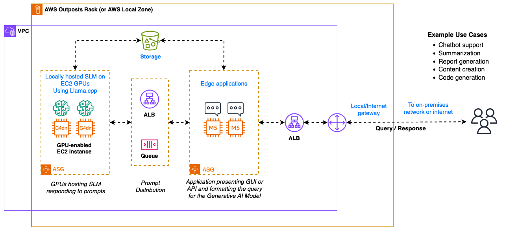
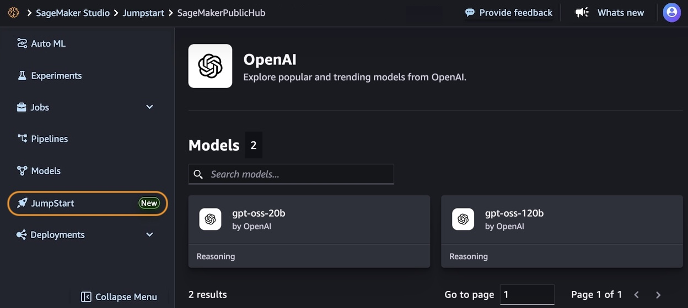
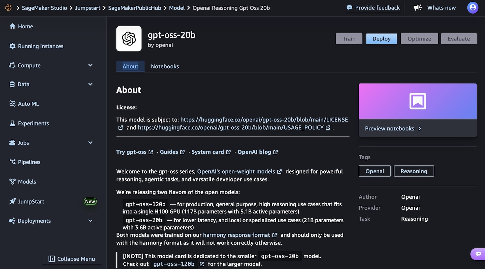

Blog 1
⚠️ Note: The information below is for reference purposes only. Please do not copy verbatim for your report, including this warning. Always read the original post for authoritative details.
OpenAI Open‑Weight Models Now Available on AWS
AWS is committed to bringing you the most advanced foundation models (FMs) in the industry, continuously expanding our selection to include groundbreaking models from leading AI innovators so that you always have access to the latest advancements to drive your business forward.
Today, I am happy to announce the availability of two new OpenAI models with open weights in Amazon Bedrock and Amazon SageMaker JumpStart. OpenAI gpt-oss-120b and gpt-oss-20b models are designed for text generation and reasoning tasks, offering developers and organizations new options to build AI applications with complete control over their infrastructure and data.
These open weight models excel at coding, scientific analysis, and mathematical reasoning, with performance comparable to leading alternatives. Both models support a 128K context window and provide adjustable reasoning levels (low/medium/high) to match your specific use case requirements. The models support external tools to enhance their capabilities and can be used in an agentic workflow, for example, using a framework like Strands Agents.
With Amazon Bedrock and Amazon SageMaker JumpStart, AWS gives you the freedom to innovate with access to hundreds of FMs from leading AI companies, including OpenAI open weight models. With our comprehensive selection of models, you can match your AI workloads to the perfect model every time.
Through Amazon Bedrock, you can seamlessly experiment with different models, mix and match capabilities, and switch between providers without rewriting code—turning model choice into a strategic advantage that helps you continuously evolve your AI strategy as new innovations emerge. These new models are available in Bedrock via an OpenAI-compatible endpoint. You can point the OpenAI SDK to this endpoint or use the Bedrock InvokeModel and Converse API.
With SageMaker JumpStart, you can quickly evaluate, compare, and customize models for your use case. You can then deploy the original or the customized model in production with the SageMaker AI console or using the SageMaker Python SDK.
Let’s see how these work in practice.
Getting started with OpenAI open weight models in Amazon Bedrock
In the Amazon Bedrock console, I choose Model access from the Configure and learn section of the navigation pane. Then, I navigate to the two listed OpenAI models on this page and request access.
Now that I have access, I use the Chat/Test playground to test and evaluate the models. I select OpenAI as the category and then the gpt-oss-120b model.

Now that I have access, I use the Chat/Test playground to test and evaluate the models. I select OpenAI as the category and then the gpt-oss-120b model.

Using this model, I run the following sample prompt:
A family has $5,000 to save for their vacation next year. They can place the money in a savings account earning 2% interest annually or in a certificate of deposit earning 4% interest annually but with no access to the funds until the vacation. If they need $1,000 for emergency expenses during the year, how should they divide their money between the two options to maximize their vacation fund?
This prompt generates an output that includes the chain of thought used to produce the result.
I can use these models with the OpenAI SDK by configuring the API endpoint (base URL) and using an Amazon Bedrock API key for authentication. For example, I set this environment variables to use the US West (Oregon) AWS Region endpoint (us-west-2) and my Amazon Bedrock API key:
Bash
export OPENAI_API_KEY="<my-bedrock-api-key>"
export OPENAI_BASE_URL="https://bedrock-runtime.us-west-2.amazonaws.com/openai/v1"
Now I invoke the model using the OpenAI Python SDK.
Python
from openai import OpenAI
client = OpenAI()
response = client.chat.completions.create(
messages=[{ "role": "user", "content": "Tell me the square root of 42 ^ 3" }],
model="openai.gpt-oss-120b-1:0",
stream=True
)
for item in response:
print(item)
I save the code (test-openai.py file), install the dependencies, and run the agent locally:
Bash
pip install openai
python test-openai.py
To build an AI agent, I can choose any framework that supports the Amazon Bedrock API or the OpenAI API. For example, here’s the starting code for Strands Agents using the Amazon Bedrock API:
Python
from strands import Agent
from strands.models import BedrockModel
from strands_tools import calculator
bedrock_model = BedrockModel(
model_id="openai.gpt-oss-120b-1:0",
region_name="us-west-2"
)
agent = Agent(
model=bedrock_model,
tools=[calculator]
)
agent("Tell me the square root of 42 ^ 3")
I save the code (test-strands.py file), install the dependencies, and run the agent locally:
Bash
pip install strands-agents strands-agents-tools
python test-strands.py
When I am satisfied with the agent, I can deploy in production using the capabilities offered by Amazon Bedrock AgentCore, including a fully managed serverless runtime and memory and identity management.
Getting started with OpenAI open weight models in Amazon SageMaker JumpStart
In the Amazon SageMaker AI console, you can use OpenAI open weight models in the SageMaker Studio. The first time I do this, I need to set up a SageMaker domain. There are options to set it up for a single user (simpler) or an organization. For these tests, I use a single user setup.
In the SageMaker JumpStart model view, I have access to a detailed description of the gpt-oss-120b or gpt-oss-20b model.

I choose the gpt-oss-20b model and then deploy the model. In the next steps, I select the instance type and the initial instance count. After a few minutes, the deployment creates an endpoint that I can then invoke in SageMaker Studio and using any AWS SDKs.

To learn more, visit GPT OSS models from OpenAI are now available on SageMaker JumpStart in the AWS Artificial Intelligence Blog.
Things to know
The new OpenAI open weight models are now available in Amazon Bedrock in the US West (Oregon) AWS Region, while Amazon SageMaker JumpStart supports these models in US East (Ohio, N. Virginia) and Asia Pacific (Mumbai, Tokyo).
Each model comes equipped with full chain-of-thought output capabilities, providing you with detailed visibility into the model’s reasoning process. This transparency is particularly valuable for applications requiring high levels of interpretability and validation. These models give you the freedom to modify, adapt, and customize them to your specific needs. This flexibility allows you to fine-tune the models for your unique use cases, integrate them into your existing workflows, and even build upon them to create new, specialized models tailored to your industry or application.
Security and safety are built into the core of these models, with comprehensive evaluation processes and safety measures in place. The models maintain compatibility with the standard GPT-4 tokenizer.
Both models can be used in your preferred environment, whether that’s through the serverless experience of Amazon Bedrock or the extensive machine learning (ML) development capabilities of SageMaker JumpStart. For information about the costs associated with using these models and services, visit the Amazon Bedrock pricing and Amazon SageMaker AI pricing pages.
To learn more, see the parameters for the models and how to invoke a model with the OpenAI Chat Completions API in the Amazon Bedrock documentation.
Get started today with OpenAI open weight models on AWS in the Amazon Bedrock console or in Amazon SageMaker AI console.
– Danilo